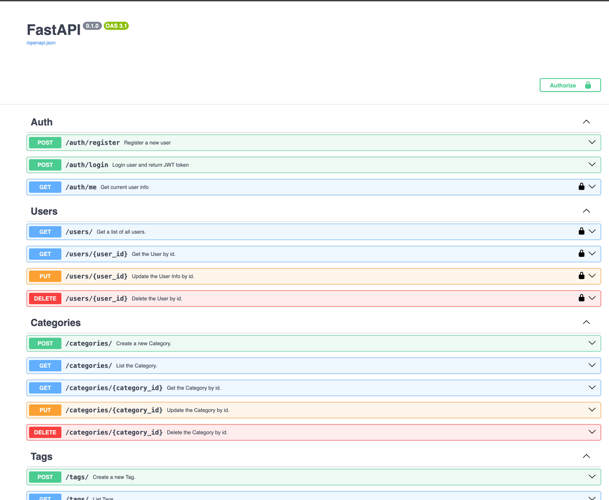

Описание выполненной работы
Цель работы заключалась в реализации своего FastAPI приложения с интеграцией в БД и использованием JWT авторизации. При этом порядок работы в основном описан в разделе практики, т.к. все практики делались уже по моему выбранному варианту (приложение для личных финансов). По этим причинам выделю основные ключевые технические детали всей работы:
- реализованы Makefile команды для упрощения всей работы. Пример пары команд находится ниже:
default: help
.PHONY: help
help: # Show help for each of the Makefile recipes.
@grep -E '^[a-zA-Z0-9 -]+:.*#' Makefile \
| while read -r l; do printf "\033[1;32m$$(echo $$l | cut -f 1 -d':')\033[00m:$$(echo $$l | cut -f 2- -d'#')\n"; done
.PHONY: install-local
install-local: # Install all requirements locally.
pip install -r requirements.txt
.PHONY: freeze
freeze: # Freeze all requirements.
pip freeze > requirements.txt
.PHONY: run-local
run-local: # Run the app locally.
python3 -m src.main
.PHONY: init-migration
init-migration: # Create alembic migration.
alembic init migrations
-
реализован линтер всего проекта через GitHub Workflows
-
приложение работает через один общий env конфиг, где отдельные компоненты настраиваются через соответствующий префикс. Ссылка для подключения к БД формируется динамически
from pydantic import Field
from pydantic_settings import BaseSettings, SettingsConfigDict
class ConfigBase(BaseSettings):
model_config = SettingsConfigDict(env_file=".env", env_file_encoding="utf-8", extra="ignore")
class UvicornConfig(ConfigBase):
model_config = SettingsConfigDict(env_prefix="UVICORN_")
host: str = Field("127.0.0.1")
port: int = Field(8000)
workers: int | None = Field(None)
log_level: str = Field("info")
class DataBaseConfig(ConfigBase):
model_config = SettingsConfigDict(env_prefix="DB_")
host: str
port: int = Field(5432)
user: str
password: str
name: str
debug: bool = Field(False)
@property
def url(self) -> str:
return f"postgresql://{self.user}:{self.password}@{self.host}:{self.port}/{self.name}"
class AuthConfig(ConfigBase):
model_config = SettingsConfigDict(env_prefix="AUTH_")
secret: str
alg: str = Field("HS256")
ttl: int = Field(360)
class Config(ConfigBase):
uvicorn: UvicornConfig = Field(default_factory=UvicornConfig)
db: DataBaseConfig = Field(default_factory=DataBaseConfig)
auth: AuthConfig = Field(default_factory=AuthConfig)
@classmethod
def load(cls) -> "Config":
return cls()
cfg = Config.load()
Итоговый .env файл должен выглядеть следующим образом:
UVICORN_HOST=127.0.0.1
UVICORN_PORT=8000
UVICORN_WORKERS=4
UVICORN_LOG_LEVEL=debug
DB_HOST=localhost
DB_PORT=5432
DB_USER=<USER>
DB_PASSWORD=<PASSWORD>
DB_NAME=<NAME>
DB_DEBUG=True
AUTH_SECRET=<SECRET>
AUTH_ALG=HS256
AUTH_TTL=360
При инициализации БД, использовании конфига и т.д. используется паттерн синглтон
- инициализация различных компонентов декомпозирована. Например, создание приложения выглядит следующим образом
import src.errors as errors
from src.routers import auth, budgets, categories, goals, tags, transactions, users
# === Base Routers ===
routers = [
auth.router,
users.router,
categories.router,
tags.router,
transactions.router,
budgets.router,
goals.router,
]
# === Errors To Handlers Map ===
exceptions = {
errors.NotFoundException: errors.not_found_exception_handler,
errors.ValidationException: errors.validation_exception_handler,
errors.AuthorizationException: errors.authorization_exception_handler,
errors.BadRequestException: errors.bad_request_exception_handler,
}
def init() -> FastAPI:
new_app = FastAPI()
for router in routers:
new_app.include_router(router)
for exc, handler in exceptions.items():
new_app.add_exception_handler(exc, handler)
return new_app
Так же, как и подключение к БД вместе с вспомогательным командами:
from sqlmodel import Session, SQLModel, create_engine
from src.config import cfg
from src.schemas.users import User
engine = create_engine(cfg.db.url, echo=cfg.db.debug)
def init() -> None:
SQLModel.metadata.create_all(engine)
def get_session() -> Session:
with Session(engine) as session:
yield session
def find_user(email: str) -> User | None:
with Session(engine) as session:
return session.query(User).filter(User.email == email).first()
А уже потом происходит общий запуск приложения
import uvicorn
from src import app, db
from src.config import cfg
app = app.init()
if __name__ == "__main__":
db.init()
uvicorn.run(
"src.main:app",
host=cfg.uvicorn.host,
port=cfg.uvicorn.port,
workers=cfg.uvicorn.workers,
log_level=cfg.uvicorn.log_level,
reload=True,
)
- работа с кастомными (и вообще со всеми) ошибками вынесена в отдельны хендлеры для фиксированного отображения в swagger
class AuthorizationException(Exception):
status: ClassVar[int] = status.HTTP_401_UNAUTHORIZED
detail: str
def __init__(self, detail: str):
self.detail = detail
def json(self) -> JSONResponse:
return JSONResponse(status_code=self.status, content={"detail": self.detail})
@classmethod
def response(cls) -> dict[int, dict[str, Any]]:
return {
cls.status: {
"description": "Authorization error",
"content": {"application/json": {"example": {"detail": "string"}}},
}
}
# === Errors Handlers ===
async def authorization_exception_handler(_: Request, exc: AuthorizationException):
return exc.json()
# === Utils ===
def error_responses(*errors: Type[Exception]) -> dict[int, dict[str, Any]]:
responses = {}
for error in errors:
responses.update(error.response())
return responses
- почти все модели данных описаны через sqlmodel (пример для пользователей)
from datetime import datetime
from pydantic import BaseModel, EmailStr
from sqlmodel import Field, Relationship
from src.schemas.base import BaseSQLModel
class UserLogin(BaseModel):
email: EmailStr
password: str
class Token(BaseModel):
access_token: str
token_type: str
class UserDefault(BaseSQLModel):
username: str
email: EmailStr
password: str
birth_date: datetime
@classmethod
def custom_validate(cls, birth_date: datetime) -> None:
cls.validate_past_data(date=birth_date, field_name="birth_date")
class User(UserDefault, table=True):
id: int = Field(default=None, primary_key=True)
created_at: datetime
categories: list["Category"] = Relationship(back_populates="user") # noqa: F821
tags: list["Tag"] = Relationship(back_populates="user") # noqa: F821
transactions: list["Transaction"] = Relationship(back_populates="user") # noqa: F821
goals: list["Goal"] = Relationship(back_populates="user") # noqa: F821
budgets: list["Budget"] = Relationship(back_populates="user") # noqa: F821
class UserUpdate(BaseSQLModel):
username: str | None = None
birth_date: datetime | None = None
@classmethod
def custom_validate(cls, birth_date: datetime) -> None:
cls.validate_past_data(date=birth_date, field_name="birth_date")
При этом за счет наследования от общего BaseSQLModel класса есть настраиваемая валидация нужных полей для всех классов
lass BaseSQLModel(SQLModel):
@staticmethod
def validate_past_data(date: any, field_name: str) -> None:
if isinstance(date, datetime):
# delete info about Time Zone
date = date.replace(tzinfo=None)
current_time = datetime.utcnow().replace(tzinfo=None)
if date > current_time:
error = errors.ValidationException(
errors.ValidationExceptionDetail(
loc=["body", field_name],
msg="Date should be in the past",
type=f"{type(date)}",
)
)
raise error
@staticmethod
def validate_future_date(date: any, field_name: str) -> None:
if isinstance(date, datetime):
# delete info about Time Zone
date = date.replace(tzinfo=None)
current_time = datetime.utcnow().replace(tzinfo=None)
if current_time >= date:
error = errors.ValidationException(
errors.ValidationExceptionDetail(
loc=["body", field_name],
msg="Date should be in the future",
type=f"{type(date)}",
)
)
raise error
- есть отдельный хендлер для проверки авторизации и работы с JWT
import datetime
import jwt
from fastapi import Security
from fastapi.security import HTTPAuthorizationCredentials, HTTPBearer
from passlib.context import CryptContext
from src.config import cfg
from src.db import find_user
from src.errors import AuthorizationException
from src.schemas.users import User
class AuthHandler:
security = HTTPBearer()
pwd_context = CryptContext(schemes=["bcrypt"])
secret = cfg.auth.secret
def get_password_hash(self, password: str) -> str:
return self.pwd_context.hash(password)
def verify_password(self, pwd: str, hashed_pwd: str) -> bool:
return self.pwd_context.verify(pwd, hashed_pwd)
def encode_token(self, email: str) -> any:
payload = {
"exp": datetime.datetime.utcnow() + datetime.timedelta(seconds=cfg.auth.ttl),
"iat": datetime.datetime.utcnow(),
"sub": email,
}
return jwt.encode(payload, self.secret, algorithm=cfg.auth.alg)
def decode_token(self, token: str) -> any:
try:
payload = jwt.decode(token, self.secret, algorithms=[cfg.auth.alg])
return payload["sub"]
except jwt.ExpiredSignatureError:
raise AuthorizationException(detail="Expired signature")
except jwt.InvalidTokenError:
raise AuthorizationException(detail="Invalid token")
def get_current_user(self, creds: HTTPAuthorizationCredentials = Security(security)) -> User | None:
email = self.decode_token(creds.credentials)
if email is None:
raise AuthorizationException(detail="Could not validate credentials")
user = find_user(email)
if user is None:
raise AuthorizationException(detail="User is not found")
return user
auth = AuthHandler()
- все эндпоинты реализованы с подключением к БД (пример для пользователей) и проверкой JWT токена
from fastapi import APIRouter, Depends
from sqlalchemy.orm import Session
from starlette import status
import src.db as db
import src.errors as errors
from src.auth import auth
from src.schemas.base import DELETE_MODEL_RESPONSE
from src.schemas.users import User, UserUpdate
router = APIRouter(
prefix="/users",
tags=["Users"],
responses=errors.error_responses(
errors.NotFoundException,
errors.ValidationException,
errors.AuthorizationException,
),
)
@router.get("/", summary="Get a list of all users.", response_model=list[User])
async def get_users(
skip: int = 0,
limit: int = 10,
session: Session = Depends(db.get_session),
_: User = Depends(auth.get_current_user),
):
users = session.query(User).offset(skip).limit(limit).all()
return users
@router.get("/{user_id}", summary="Get the User by id.", response_model=User)
async def get_user(
user_id: int,
session: Session = Depends(db.get_session),
_: User = Depends(auth.get_current_user),
):
user = session.query(User).filter(User.id == user_id).first()
if user is None:
raise errors.NotFoundException(entity_name="User", entity_id=user_id)
return user
@router.put("/{user_id}", summary="Update the User Info by id.", response_model=User)
async def update_user(
user_id: int,
request: UserUpdate,
session: Session = Depends(db.get_session),
_: User = Depends(auth.get_current_user),
):
request.custom_validate(birth_date=request.birth_date)
user = session.query(User).filter(User.id == user_id).first()
if user is None:
raise errors.NotFoundException(entity_name="User", entity_id=user_id)
for key, value in request.dict(exclude_unset=True).items():
setattr(user, key, value)
session.commit()
session.refresh(user)
return user
@router.delete(
"/{user_id}",
summary="Delete the User by id.",
responses={status.HTTP_200_OK: DELETE_MODEL_RESPONSE},
)
async def delete_user(
user_id: int,
session: Session = Depends(db.get_session),
_: User = Depends(auth.get_current_user),
):
user = session.query(User).filter(User.id == user_id).first()
if user is None:
raise errors.NotFoundException(entity_name="User", entity_id=user_id)
session.delete(user)
session.commit()
return {"detail": f"User with id {user_id} has been deleted."}
В некоторых запросах реализован листинг по с пагинацией (как в ручке для листинга пользователей). Но помимо стандартных CRUD операций в сервисах еще есть и вложенные запросы
@router.get(
"/{transaction_id}/with-category",
summary="Get a specific transaction with Category details.",
response_model=TransactionWithCategory,
)
async def get_transaction_with_category(
transaction_id: int,
session: Session = Depends(db.get_session),
_: User = Depends(auth.get_current_user),
):
transaction = session.query(Transaction).filter(Transaction.id == transaction_id).first()
if not transaction:
raise errors.NotFoundException(entity_name="Transaction", entity_id=transaction_id)
return TransactionWithCategory(
id=transaction.id,
user_id=transaction.user_id,
category_id=transaction.category_id,
amount=transaction.amount,
date=transaction.date,
description=transaction.description,
category=transaction.category,
)
Итоговый swagger выглядит следующим образом
